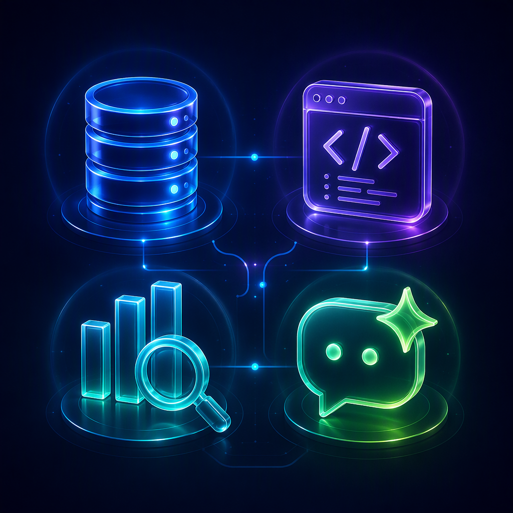

كل ما تحتاجه رحلة البيانات، في منصة واحدة
من الرفع الخام إلى التقرير التنفيذي الجاهز للعرض — بلا كود وبخطوات تفاعلية بسيطة.
محرك OLAP فوري + مستكشف بيانات تفاعلي
تجميع وحساب في الذاكرة للبيانات الضخمة، بلا انتظار ولا حاجة لكتابة كود معقّد.
- تجميع وحساب فوري في الذاكرة ومطابقة التوزيعات الإحصائية بأقل من 10 ميلي ثانية
- فلترة وتجميع تفاعلي للأعمدة دون كتابة أي استعلام
- تصدير فوري لأي نتيجة استكشاف إلى CSV

توليد SQL ذكي داخل ساندبوكس 9 طبقات
تحويل الأسئلة الطبيعية (عربي/إنجليزي) إلى SQL دقيق، مع تحقق أمني كامل قبل أي تنفيذ.
- تحقق نحوي وأمني من كل استعلام قبل التنفيذ
- تقدير الكلفة الحسابية مسبقاً لتفادي الاستعلامات الثقيلة
- سجل تدقيق كامل لكل استعلام يُنفَّذ على البيانات

AI Copilot — محادثة تحوّل الأرقام إلى قرارات
مساعد ذكي تفاعلي يستخرج الرؤى ويولّد الرسوم البيانية تلقائياً من بياناتك.
- محادثة تفاعلية للحصول على رؤى فورية مدعومة بالذكاء الاصطناعي
- توليد الرسم البياني الأنسب لبياناتك تلقائياً
- تأليف سردي تلقائي يحوّل النتائج إلى قصة تنفيذية مفهومة
نمذجة علاقات ذكية (AI ERD)
اقتراح العلاقات بين الجداول تلقائياً وبناء مخطط كيانات-علاقات تفاعلي قابل للتعديل.
توصيف إحصائي وفحص جودة
كشف القيم الشاذة والمفقودة، حساب المتوسطات والانحراف المعياري، وتحليل التوزيعات.
لوحات تحكم تفاعلية
تصميم لوحات مخصصة بالسحب والإفلات، مع تحديث فوري للمؤشرات الرئيسية.
تصدير احترافي
تصدير أي لوحة تحكم أو نتيجة مباشرة لمشاركتها مع الإدارة أو العملاء.
دعم متعدد لمزوّدي الذكاء الاصطناعي
اختر مزوّد الذكاء الاصطناعي الأنسب (سحابي أو محلي عبر Ollama) حسب سياسات خصوصيتك.
ثنائية اللغة بالكامل
واجهة عربية RTL كاملة وإنجليزية جنباً إلى جنب لفرق العمل متعددة الجنسيات.